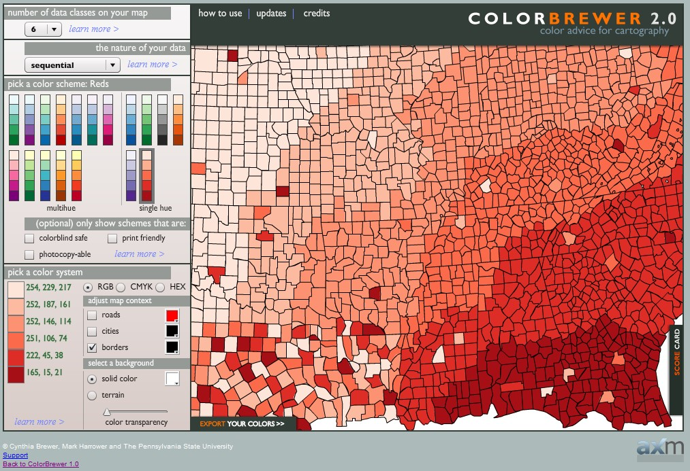

Content
- Introducing maps
- Typology of maps
- Reference maps
- Thematic maps
- Proportional Symbol Map
- Choropleth Mapping
- Introduction to tmap Methods
15/08/2025
A model of real world depict by a collection of cartographic symbols or/and visual abstraction.
An interface between geographical data and map users.

Source: Life in Los Angeles


Figure below explains how attribute values are map on circles. One strategy to overcome this problem is to use square instead of circle.
When designing a proportional symbol map, one of the important consideration is to avoid the circles blocking each other. One possible strategy to overcome this problem is to applying opacity (also known as transparency).
One important characteristic of proportional symbols is that they can easily be designed to represent more than one data value per location. Among the most common example is a pie chart map in which a circle is scaled proportionally to some total, and the size of wedges within the circle is scaled to depict a proportion of a total for two or more sub-categories.
Proportional side-by-side bar map places side-by-side bar chart on a map based on the location of the observations.
Bricks Map aims to provide better ways to encode quantitative information graphically—ways that can be easily, efficiently, and accurately decoded.
Source: Building insight with bricks.
By plotting a proportional symbol map and a bricks map side-by-side as shown below, it is clear that bubbles of graduated sizes proportional to the value ranges that they represent can be difficult to distinguish than the bricks.


A dot-density map is a type of thematic map that uses dots or other symbols on the map to show the values of one or more numeric data fields. Each dot on a dot-density map represents some amount of data.
One dot represent 100 households.
Reference: Dot distribution map at wiki and Dot Density Maps

Caution
Avoid equal interval if your data are skewed to one end or if you have one or two really large outlier values. Outliers in that case will likely produce empty classes, wasting perfectly good classes with no observations in them. Since the hotel data above doesn’t have really large outliers, this is a data distribution that works well with equal interval.


tm_plot() for static maps and tm_view() for interactive maps.renderTmap(), tmapOutput(), tmapProxy() and tm_remove_layer().